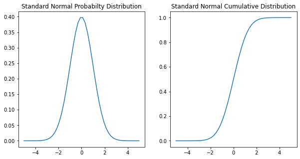
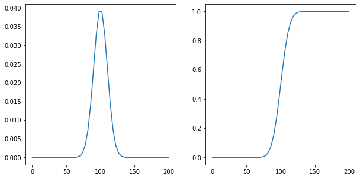
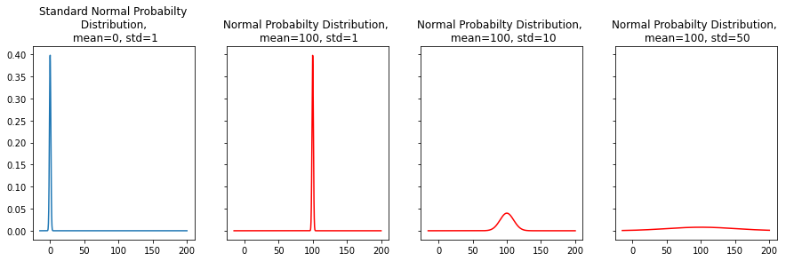
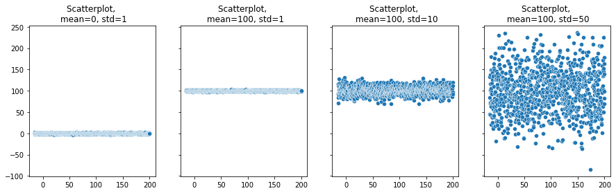
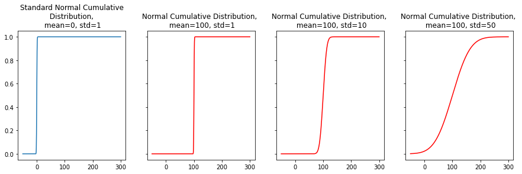
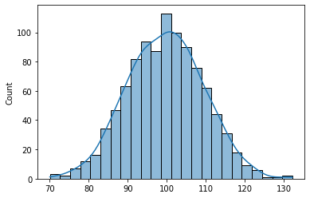

from scipy.stats import norm
import numpy as np
import pandas as pd
import matplotlib.pyplot as plt
import seaborn as sns
# Plot the standard normal distribution, mean = 0, std = 1
n_mean = 0
n_std = 1
x = np.linspace(-5,5)
frozen = norm(loc=n_mean, scale=n_std)
p_density = frozen.pdf(x)
c_density = frozen.cdf(x)
fig, axes = plt.subplots(1,2, figsize=(10,5))
sns.lineplot(x=x, y=p_density, ax=axes[0])
axes[0].set(title='Standard Normal Probabilty Distribution')
sns.lineplot(x=x, y=c_density, ax=axes[1])
axes[1].set(title='Standard Normal Cumulative Distribution');
print(f'68% of the data is between:{frozen.interval(alpha=0.68)}')
print(f'95% of the data is between:{frozen.interval(alpha=0.95)}')
print(f'99.7% of the data is between:{frozen.interval(alpha=0.997)}')
68% of the data is between:(-0.994457883209753, 0.9944578832097535)
95% of the data is between:(-1.959963984540054, 1.959963984540054)
99.7% of the data is between:(-2.9677379253417833, 2.9677379253417717)

# mean is 100 and std 10
n_mean = 100
n_std = 10
x = np.linspace(0,200)
frozen = norm(loc=n_mean, scale=n_std)
p_density = frozen.pdf(x)
c_density = frozen.cdf(x)
fig, axes = plt.subplots(1,2, figsize=(10,5))
sns.lineplot(x=x, y=p_density, ax=axes[0])
sns.lineplot(x=x, y=c_density, ax=axes[1]);
print(f'68% of the data is between:{frozen.interval(alpha=0.68)}')
print(f'95% of the data is between:{frozen.interval(alpha=0.95)}')
print(f'99.7% of the data is between:{frozen.interval(alpha=0.997)}')
68% of the data is between:(90.05542116790247, 109.94457883209753)
95% of the data is between:(80.40036015459947, 119.59963984540053)
99.7% of the data is between:(70.32262074658217, 129.6773792534177)

x = np.linspace(-15,200,1000)
frozen_01 = norm(loc=0, scale=1)
frozen_02 = norm(loc=100, scale=1)
frozen_03 = norm(loc=100, scale=10)
frozen_04 = norm(loc=100, scale=50)
y_01 = frozen_01.pdf(x)
y_02 = frozen_02.pdf(x)
y_03 = frozen_03.pdf(x)
y_04 = frozen_04.pdf(x)
fig, axes = plt.subplots(1,4, figsize=(15,4), sharey=True)
sns.lineplot(x=x, y=y_01, ax=axes[0])
axes[0].set(title='Standard Normal Probabilty\n Distribution, \n mean=0, std=1')
sns.lineplot(x=x, y=y_02, ax=axes[1], color = 'red')
axes[1].set(title='Normal Probabilty Distribution, \n mean=100, std=1');
sns.lineplot(x=x, y=y_03, ax=axes[2], color = 'red')
axes[2].set(title='Normal Probabilty Distribution, \n mean=100, std=10');
sns.lineplot(x=x, y=y_04, ax=axes[3], color = 'red')
axes[3].set(title='Normal Probabilty Distribution, \n mean=100, std=50');

# Generate random variables for each distribution and visulize it
x = np.linspace(-15,200,1000)
frozen_01 = norm(loc=0, scale=1)
frozen_02 = norm(loc=100, scale=1)
frozen_03 = norm(loc=100, scale=10)
frozen_04 = norm(loc=100, scale=50)
y_01 = frozen_01.rvs(1000)
y_02 = frozen_02.rvs(1000)
y_03 = frozen_03.rvs(1000)
y_04 = frozen_04.rvs(1000)
fig, axes = plt.subplots(1,4, figsize=(15,4), sharey=True)
sns.scatterplot(x=x, y=y_01, ax=axes[0])
axes[0].set(title='Scatterplot, \n mean=0, std=1')
sns.scatterplot(x=x, y=y_02, ax=axes[1])
axes[1].set(title='Scatterplot, \n mean=100, std=1');
sns.scatterplot(x=x, y=y_03, ax=axes[2])
axes[2].set(title='Scatterplot, \n mean=100, std=10');
sns.scatterplot(x=x, y=y_04, ax=axes[3])
axes[3].set(title='Scatterplot, \n mean=100, std=50');

x = np.linspace(-50,300,1000)
frozen_01 = norm(loc=0, scale=1)
frozen_02 = norm(loc=100, scale=1)
frozen_03 = norm(loc=100, scale=10)
frozen_04 = norm(loc=100, scale=50)
y_01 = frozen_01.cdf(x)
y_02 = frozen_02.cdf(x)
y_03 = frozen_03.cdf(x)
y_04 = frozen_04.cdf(x)
fig, axes = plt.subplots(1,4, figsize=(15,4), sharey=True)
sns.lineplot(x=x, y=y_01, ax=axes[0])
axes[0].set(title='Standard Normal Cumulative\n Distribution, \n mean=0, std=1')
sns.lineplot(x=x, y=y_02, ax=axes[1], color = 'red')
axes[1].set(title='Normal Cumulative Distribution, \n mean=100, std=1');
sns.lineplot(x=x, y=y_03, ax=axes[2], color = 'red')
axes[2].set(title='Normal Cumulative Distribution, \n mean=100, std=10');
sns.lineplot(x=x, y=y_04, ax=axes[3], color = 'red')
axes[3].set(title='Normal Cumulative Distribution, \n mean=100, std=50');

# loc = mean
# scale = std deviation
frozen = norm(loc=100, scale=10)
print(f'Mean is {frozen.mean()}')
print(f'Standard Deviation is {frozen.std()}')
Mean is 100.0
Standard Deviation is 10.0
# Find probabilty that observation is less than equal to 90
frozen.cdf(90)
0.15865525393145707
# Find probabilty that observation is less equal to 110
frozen.cdf(110)
0.8413447460685429
# Probabilty observation is between 90 and 110
# This is 1 standard deviation on both sides of the mean
frozen.cdf(110) - frozen.cdf(90)
0.6826894921370859
# Find the probabilty observation is greater than 120
print (frozen.sf(120)) # using the survival function.
print(1-frozen.cdf(120)) # 1 - cdf(120)
0.022750131948179195
0.02275013194817921
# Find the observations given the middle area is 95%, this will be 2 standard deviations, so 80 to 120
# lower end is 2.5%, upper end is 97.5% and middle area is 95%
lower_end= frozen.ppf(0.025) # observation corresponding to 2.5%
upper_end = frozen.ppf(0.975) # observation corresponding to 97.5%
print(f'At 95%, the lower bound is {lower_end:.2f} and upper bound is {upper_end:.2f}.')
frozen.interval(alpha=0.95)
At 95%, the lower bound is 80.40 and upper bound is 119.60.
(80.40036015459947, 119.59963984540053)
# Generate random variables for distribution (mean = 100, std=10)
frozen = norm(loc=100, scale=10)
tmp = frozen.rvs(1000)
print(f'Mean is {np.mean(tmp):.2f}')
print(f'Standard Deviation is {np.std(tmp):.2f}')
sns.histplot(tmp, kde=True);
Mean is 99.68
Standard Deviation is 9.69

References
https://stackoverflow.com/questions/12412895/how-to-calculate-probability-in-a-normal-distribution-given-mean-standard-devi